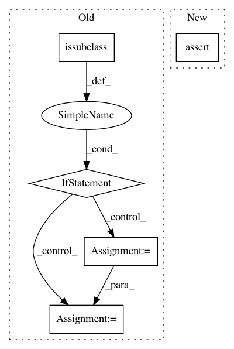

cceae1fee29ec0269616e7c2364f1714a518b2c3,python/src/vmaf/core/train_test_model.py,TrainTestModel,from_file,#Any#Any#Any#Any#,338
Before Change
train_test_model.param_dict = info_loaded["param_dict"]
train_test_model.model_dict = info_loaded["model_dict"]
if issubclass(model_class, LibsvmNusvrTrainTestModel):
// == special handling of libsvmnusvr: load .model differently ==
model = svmutil.svm_load_model(filename + ".model")
train_test_model.model_dict["model"] = model
return train_test_model
def _preproc_train(self, xys):
self.model_type = self.TYPE
After Change
@classmethod
def from_file(cls, filename, logger=None, optional_dict2=None):
assert os.path.exists(filename), "File name {} does not exist.".format(filename)
with open(filename, "rb") as file:
info_loaded = pickle.load(file)
model_type = info_loaded["model_dict"]["model_type"]
model_class = TrainTestModel.find_subclass(model_type)
In pattern: SUPERPATTERN
Frequency: 3
Non-data size: 5
Instances
Project Name: Netflix/vmaf
Commit Name: cceae1fee29ec0269616e7c2364f1714a518b2c3
Time: 2018-02-28
Author: zli@netflix.com
File Name: python/src/vmaf/core/train_test_model.py
Class Name: TrainTestModel
Method Name: from_file
Project Name: Netflix/vmaf
Commit Name: 8d58f3104323f5b28957302a5713e4c08e989bf7
Time: 2018-02-21
Author: zli@netflix.com
File Name: python/src/vmaf/core/train_test_model.py
Class Name: TrainTestModel
Method Name: from_file
Project Name: markovmodel/PyEMMA
Commit Name: a68a41b9182a6b9f112f659e893800631c13eb39
Time: 2017-12-17
Author: m.scherer@fu-berlin.de
File Name: pyemma/_base/serialization/serialization.py
Class Name: SerializableMixIn
Method Name: __getstate__